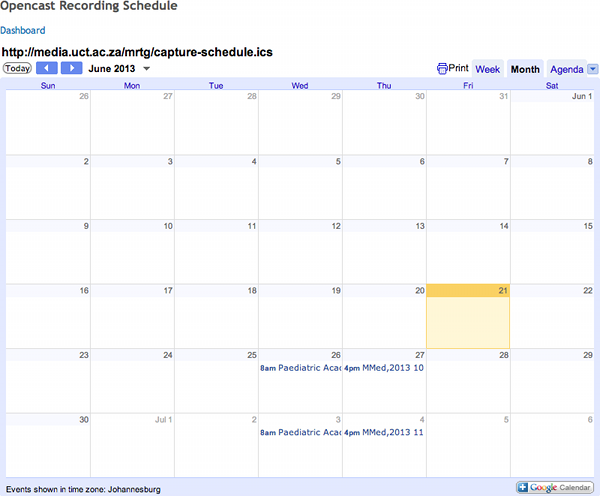

Tools / Software / Workflows to support Matterhorn Installations
Centre for Educational
Technology (UCT)
June 2013
Current installation
- 4 SLES VM instances (1 admin node, 1 Red5 streaming server, 2 worker nodes)
- 23 equipped lecture venues (Small Dell CAs running Ubuntu)
- Mysql5 database
- Storage on NetApp
Semester 1 (2013) - Stats
- Recorded Venues - 17
- Lecture Series - 28
- Lectures Published - 655
- Average Recordings / week - 52
Future Plans
Possible scale-up to 179 venues!
How do we efficiently scale-up and maintain our Matterhorn deployment?
- Good software / tools
- Good workflows
Our software / tools / workflows
Sakai - Matterhorn Integration

JIRA driven development
Reporting
- Semester Statistics in Excel
Monitoring Tools
- Scripts used to generate our monitoring graphs (Perl)
- IP Camera dashboard (in Ruby)
Server / CA Load
- Cacti - used to monitor load on admin, worker nodes and capture agents
Alerts
- Perl scripts used to notify admins when CAs are down
- Sintrex emails sent when there are issues with CAs or IP cameras
Deployments
- Custom Ubuntu CD using preseeding for capture agents
- Bash build script for admin nodes
Recording schedule
Configuration Management
- Chef?
- Puppet?
- Ansible?
Workflows
- Proactive
- Reactive
Emerging Technologies?
Your software / tools / workflows ?
- LTI Integration
- JIRA Driven Development
- Reporting
- Monitoring Tools
- Server / CA Load
- Alerts
- Deployments
- Recording Schedule
- Configuration Management
- Workflows
- Emerging Technologies
Credits
- http://www.bigpicture.in/40-mind-blowing-nature-photos-by-katarina-stefanovic
- Stephen Marquard / Roger Brown / David Horwitz / Lubabalo Badi / Genevieve Chang / LT Team
The End
Presented by
Edmore Moyo / @etmoyo / edmoremoyo.com
On behalf of